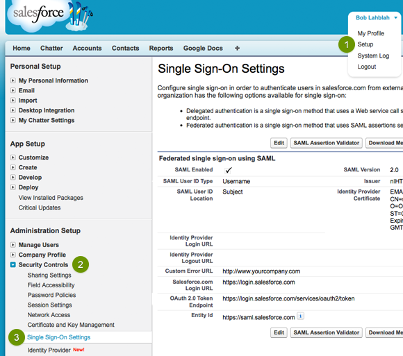
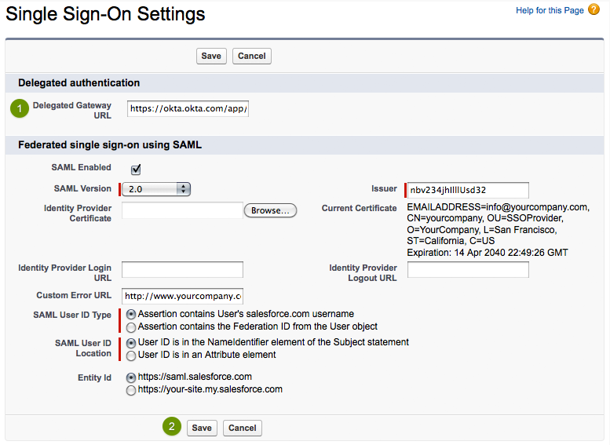

CLICK HERE to log in to Salesforce with the same administrator username and password-token used for User Management settings in Okta.
Click on Setup
Click Security Controls to open the sub-menu
Click Single Sign-On Settings

Click the Edit button to display a form similar to the screenshot below.
Check SAML Enabled and a form will display
Set the SAML Version to 2.0
If you have Multiple End-points enabled, the configuration page may ask you to setup a Name and API Name. Set these values according to your preference.
Download your Okta Identity Provider Certificate then upload it in the Identity Provider Certificate field
Sign into the Okta Admin dashboard to generate this valueCopy and paste the following key into Issuer:
Sign into the Okta Admin dashboard to generate this value(Optional) Copy and paste the following URL into Identity Provider Login URL:
Sign into the Okta Admin dashboard to generate this valueThis URL will authenticate your users when they attempt to log in directly to Salesforce or click on a deep link in Salesforce and are not currently authenticated.
(Optional) Copy and paste the following URL into Identity Provider Logout URL:
Sign into the Okta Admin dashboard to generate this valueThis URL sends your users to their Okta home page when they log out of Salesforce.
Set the SAML User ID Type/SAML Identity Type to Assertion contains User's salesforce.com username
Set the SAML User ID Location/SAML Identity Location to User ID/identity is in the NameIdentifier element of the Subject statement
For Entity ID,
Click Save
Please note: Delegated authentication is an optional integration that can be used in addition to SAML 2.0.
What does this feature do?
Delegated authentication enables various integrations with Salesforce — like the Microsoft Outlook plugin — as well as giving you the ability to lock a user out of Salesforce. Unlike SAML 2.0 single sign-on, delegated authentication is turned on at the user profile level. You have the ability to enable delegated authentication for a single user or large group; it all depends on who has the user profile where the Is Single Sign-On Enabled permission is enabled.
Where can I find this feature in my version of Salesforce?
You can't see this form until Salesforce has enabled delegated authentication for your organization. Once enabled, the delegated authentication form is located on the Single Sign-On Settings page in Salesforce — the same place where you configure SAML 2.0.
Call Salesforce at 1-800-667-6389 and ask them to enable delegated authentication for your organization. You can also do this by opening a case in the Salesforce customer service application.
Once Salesforce enables delegated authentication you can proceed with the steps below.
Go to the Single Sign-On Settings page located in the Setup > Security Controls section of Salesforce. Click the Edit button to display a form similar to the screenshot below.
Copy and paste the URL below into the Delegated Gateway URL field:
Sign into the Okta Admin dashboard to generate this valueClick Save

We recommend creating a test user profile so you can experiment with this feature on a single user. If you feel comfortable with this feature then you can skip to the next section.
Go to the Profiles page located in the Setup > Manage Users section of Salesforce
Open a User Profile you would like to experiment with
Click the Clone button to make a copy of this profile. Using a cloned profile allows you to avoid impacting any other users who have the original profile.
Give the cloned profile a name
Click Save
IMPORTANT: Enabling single sign-on for a user profile will affect every user who is assigned that user profile. If you want to experiment with a single user first, we recommend creating a cloned profile (see above) to test with.
Go to the Profiles page located in the Setup > Manage Users section of Salesforce
Click Edit on the user profile and scroll down to the General User Permissions section
Check the Is Single Sign-On Enabled checkbox
Click Save
IMPORTANT: Do not enable delegated authentication for the Salesforce user used by Okta to connect to the Salesforce User Management APIs. The API user is specified in Okta on the Salesforce User Management tab.
Go to the Users page located in the Setup > Manage Users section of Salesforce
Click Edit for a user you want to enable single sign-on for
Select a Profile that has delegated authentication single sign-on enabled (use the cloned profile if you are experimenting)
Click Save
In Okta, go to the People list and click a person's name to view their profile
Click Assign Application
Select Salesforce from the list and enter a Salesforce username that has delegated authentication enabled
Click Save
CLICK HERE to go to the Salesforce login page
Enter the Salesforce username you used in the previous section
Enter the Okta password for the Okta user assigned the Salesforce username above
Click Login
Assuming you logged in successfully, you can use these credentials for salesforce client application integrations like the Microsoft Outlook plugin and other APIs.
Your users are ready to single sign-on to Salesforce!